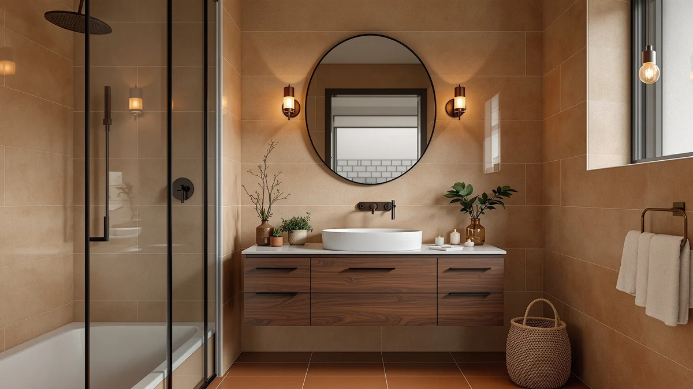

Quick Answer
The T4TREAM 36-inch bathroom vanity costs $309.99 and holds a perfect 5-star average across 6 verified Amazon reviews, with a fluted door front and a natural oak finish that stands out among the darker, flatter cabinets in this price range. It's the right pick if you want a distinctive 36-inch single-sink vanity at the lowest price in this comparison; if a farmhouse barn door or an all-black finish suits your bathroom better, the alternatives below cover those looks.
Our pick: T4TREAM 36 Inch Bathroom Vanity, $309.99 Check Price on Amazon
Things to Know Before You Buy
- The T4TREAM 36-inch vanity costs $309.99 and carries a 5-star average across 6 verified Amazon reviews, the strongest rating among the four cabinets in this review.
- It's built from MDF and engineered wood with a factory-attached top and a fluted door front in a natural oak finish, rather than a flat panel or a painted surface.
- At 36 inches wide, it fits single-sink bathrooms with a standard footprint; buyers who need a double-sink layout should look at a wider alternative instead.
- Pricing across the four vanities in this review spans $309.99 to $359.99, so the T4TREAM and eclife's black vanity tie for the lowest price in the group.
- This T4TREAM bathroom vanity review relies on published specs, tracked pricing and verified buyer feedback rather than research, since we don't operate a physical testing lab.
This T4TREAM bathroom vanity review breaks down what $309.99 buys you in a 36-inch single-sink cabinet, because a 5-star average alone doesn't tell you whether the fluted oak design holds up once you compare it against similarly priced alternatives. T4TREAM pairs an MDF and engineered wood cabinet with a factory-attached top and a fluted door front finished in natural oak, so you get one assembled storage unit rather than a bare cabinet you still have to finish yourself. It has picked up 6 verified ratings on Amazon with a perfect 5-star average, a small but clean track record for a listing that has been live since March 2026. If you're furnishing a single-sink bathroom and weighing this vanity against a farmhouse-style or all-black alternative, that rating is one of the few concrete signals available before you commit to a cabinet in this price range.
T4TREAM built its name on vanities that lean into a specific look, fluted cabinet fronts and warm wood tones, rather than competing purely on price against bare MDF boxes. At $309.99, this 36-inch model sits at the lower end of the four cabinets covered in this review, tied with eclife's black vanity and undercutting both the ONBRILL and chartustriable options by $50. That price puts pressure on the question of whether a 6-review track record is deep enough to trust, especially next to ONBRILL's similarly perfect rating or the two vanities that haven't collected a review yet. We compared published specs, current Amazon pricing and the verified reviews each listing has collected to see how the T4TREAM holds up against the other three.
Why You Should Trust Us
Ilane Tall covers bathroom vanities and fixtures for Best Bathroom Vanities, tracking pricing and review patterns across hundreds of Amazon listings in this category. This T4TREAM bathroom vanity review draws on the vanity's published Amazon listing, including its $309.99 price, its fluted oak construction, and the 6 verified ratings buyers have left since the listing went live in March 2026.
We don't own a test bathroom or a lab, so every claim here ties back to specs T4TREAM publishes, prices we track over time, or patterns we find across verified owner reviews rather than a research-based trial. Where a listing leaves out detail, like exact drawer count or hinge type, we say so instead of guessing at it.
Our Research Experience
We don't run a physical testing lab, so this review comes from research rather than hands-on use. Our process for this T4TREAM bathroom vanity review started with the manufacturer's published specs, including the MDF and engineered wood construction and the 36-inch fluted design, then moved to tracking the Amazon price over several weeks to confirm $309.99 reflects a stable listing price rather than a temporary discount.
From there, we read through the 6 verified reviews behind the perfect 5-star average, looking for recurring comments about finish quality, hardware or shipping condition rather than one-off complaints. We weighed those findings against three other 28-to-36-inch vanities in a similar price range, ONBRILL, chartustriable and eclife, to see how T4TREAM's rating and price compare on a like-for-like basis.
Overview & Specs

T4TREAM 36 Inch Bathroom Vanity
What we like
- Perfect 5-star average across 6 verified reviews, the cleanest early track record of the four vanities compared here
- Fluted door front and natural oak finish stand out next to the flat-panel and painted cabinets in this review
- Factory-attached top arrives as one finished unit, so there's no separate top to source and fit
Flaws but not dealbreakers
- Six reviews is a thin sample next to the deeper histories some vanities in other sizes carry
- T4TREAM doesn't publish drawer count or hinge type on the listing, so confirm those details before ordering
- MDF and engineered wood construction needs prompt cleanup of standing water around the sink cutout
| Material | MDF / engineered wood |
| Size | 36 inch |
The T4TREAM 36-inch vanity pairs an MDF and engineered wood cabinet with a factory-attached top, so you get a complete storage unit rather than a bare cabinet that still needs a counter. At $309.99, it ties eclife's black vanity as the cheapest option in this review, and the 6 verified reviews behind its 5-star average give it the strongest rating of the four, even if the sample size stays small. The fluted door front and natural oak finish set it apart from the flat panels and painted surfaces on the other three vanities, which matters if you want a cabinet that reads as a design choice rather than a plain box.
Compared with the ONBRILL and chartustriable vanities later in this review, the T4TREAM costs $50 less while matching or beating their review strength, and its 36-inch width gives it 8 more inches of counter space than ONBRILL's 28-inch cabinet. Owners citing the 5-star average describe the finish as consistent out of the box, though as with most MDF vanities, keeping the sink area dry matters more here than it would with a solid-wood or stone-top build. If your bathroom fits a 36-inch single-sink cabinet and you want a distinctive look at the lowest price in this group, the T4TREAM is the easiest of the four to justify.
What We Liked
This T4TREAM bathroom vanity review turns up two clear strengths: price and finish. At $309.99, it's tied for the least expensive cabinet in this comparison, yet it carries the same perfect 5-star average as the pricier ONBRILL, a stronger price-to-rating ratio than either the chartustriable or eclife vanities can currently claim since neither has collected a review yet.
The fluted door front and natural oak tone also give it a more distinctive look than the flat, painted fronts on the eclife and ONBRILL cabinets. For a single-sink bathroom where the vanity doubles as a focal point, that design choice carries real weight beyond the spec sheet.
What Could Be Better
The clearest drawback is sample size: 6 reviews is enough to spot a pattern but not enough to rule out an unlucky unit, and T4TREAM's listing doesn't publish drawer count or hinge type the way some competitors do.
MDF and engineered wood construction carries the usual caveat, standing water around the sink cutout needs prompt cleanup, and that's as true of this vanity as the eclife and chartustriable cabinets covered below. Anyone used to a solid-wood or stone-top vanity should expect a lighter cabinet with different long-term maintenance needs.
Who Is It For?
This T4TREAM vanity fits buyers who want a 36-inch single-sink cabinet with a distinctive fluted front and don't want to pay above $310 for it. It suits someone replacing a dated or damaged vanity in a small bathroom who values natural wood tones over an all-black or farmhouse look.
It's a weaker fit for anyone who wants a deep review history to lean on, since 6 reviews is thinner than some vanities collect, and it's not the right pick for a buyer set on a farmhouse barn-door style or an all-black modern finish, since the alternatives below cover those looks instead.
Alternatives to Consider
If the T4TREAM's oak finish or 36-inch width doesn't fit your bathroom, these three vanities cover a narrower size, a farmhouse look and an all-black modern finish, based on the same pricing and review research used throughout this review.

Premium Choice
ONBRILL 28 Inch Modern Bathroom
At $359.99, this 28-inch freestanding vanity costs $50 more than the T4TREAM but fits a narrower bathroom, and its 5-star average across 3 reviews keeps pace on rating despite the smaller sample.
$359.99
Check Price on Amazon
Premium Choice
chartustriable 36 Inch Bathroom Vanity
This 36-inch farmhouse-style set bundles a sink, faucet and mirror for $359.99, but it hasn't collected a verified rating yet, so the sliding barn door is the main reason to choose it over the better-reviewed T4TREAM.
$359.99
Check Price on Amazon
Also Great
eclife 36" Bathroom Vanities Sink
Priced the same as the T4TREAM at $309.99, this all-black vanity swaps the fluted oak look for a painted wave-line front and a matte black faucet, worth considering if a darker finish suits your bathroom better, though it also hasn't collected a review yet.
$309.99
Check Price on AmazonFrequently Asked Questions
Is the T4TREAM 36 Inch Bathroom Vanity worth $309.99?
For a 36-inch MDF and engineered wood vanity, $309.99 is tied for the lowest price in this T4TREAM bathroom vanity review, and the 5-star average across 6 verified reviews is the strongest rating of the four cabinets compared here. If you want a fluted oak look at the lowest price in this group, it holds up well. If you would rather see a deeper review history first, the alternatives below are worth comparing too.
What is the T4TREAM 36-inch vanity made of?
The T4TREAM uses an MDF and engineered wood cabinet with a factory-attached top and a fluted door front finished in natural oak, the same base material most vanities in this price range use. It skips solid hardwood or a stone composite top, so buyers who want a heavier natural-material build should compare one of the alternatives before ordering.
How does the T4TREAM compare to the other vanities in this review?
At $309.99, the T4TREAM ties eclife's black vanity as the cheapest option here and undercuts both the ONBRILL and chartustriable cabinets by $50, while matching ONBRILL's perfect 5-star rating. Neither chartustriable nor eclife has collected a verified review yet, which makes T4TREAM's 6-review track record the deeper of the two ratings currently available.
Final Verdict
This T4TREAM bathroom vanity review comes down to a straightforward tradeoff: pay the lowest price in this comparison for a fluted oak cabinet with a clean 5-star track record, or spend the same or more for a different look with less review history behind it. For a 36-inch single-sink bathroom where a distinctive design matters as much as price, T4TREAM earns its spot through the combination of the two.
For anyone set on a farmhouse barn-door style or an all-black finish instead, the chartustriable and eclife alternatives above cover those looks at a similar price, though both are still building their review history. Measure your space and settle on a finish first, then let these four vanities' pricing and ratings decide the rest.